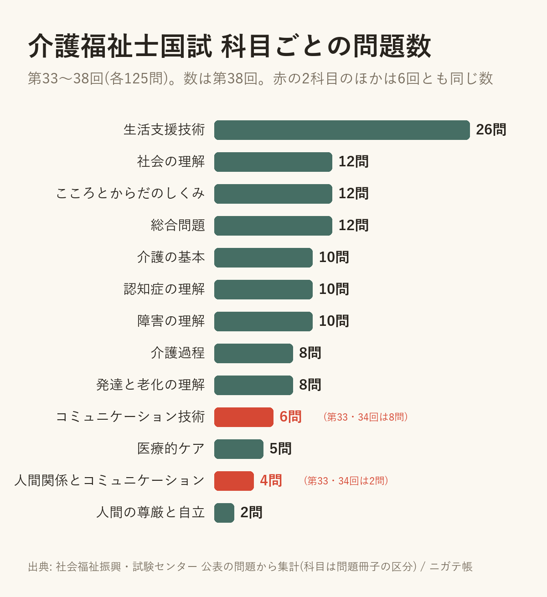

介護福祉士の国試、科目ごとの問題数は毎回同じだった(第33〜38回を数えた)
2026-10-07 ・ @apkderete
過去問アプリを作るときに、介護福祉士の第33回から第38回までの問題を科目ごとに分けて入れました。そのついでに、科目ごとの問題数を回ごとに数えてみたら、ほとんど毎回同じ数でした。
勉強の時間をどの科目にどれだけ使うかを考えるときの、ひとつの目安になると思うので載せておきます。
第38回の科目ごとの問題数

いちばん多いのは生活支援技術で、125問のうち26問です。全体の約2割にあたります。次が社会の理解、こころとからだのしくみ、総合問題の12問ずつ。いちばん少ないのは人間の尊厳と自立の2問でした。
6回とも同じ数だった科目と、変わった科目
13の科目のうち11は、第33回から第38回まで6回とも同じ問題数でした。
変わっていたのは2つです。人間関係とコミュニケーションは第33回・第34回が2問で、第35回からは4問。コミュニケーション技術は第33回・第34回が8問で、第35回からは6問です。2つを合わせた数は10問のまま変わっていません。
過去問を古い回から解くときは、この2科目だけ問題の数の割合が今と少し違うことを覚えておくとよさそうです。
数え方について
科目は、試験の問題冊子の区分に合わせています。問題は社会福祉振興・試験センターが公表したものです。数字はアプリに入れている問題データから数えたもので、私の入力に誤りがある可能性はあります。気づいたことがあれば X(@apkderete)で教えてください。
第38回の問題は、1問ずつ正答と解説つきで置いています。
介護福祉士 第38回の過去問と解説 / 第39回の試験日と合格基準
解説は私が書いたもので、試験センターとは関係ありません。過去問アプリ「ニガテ帳」(iPhone)では、介護福祉士の750問を科目ごとにも解けます。